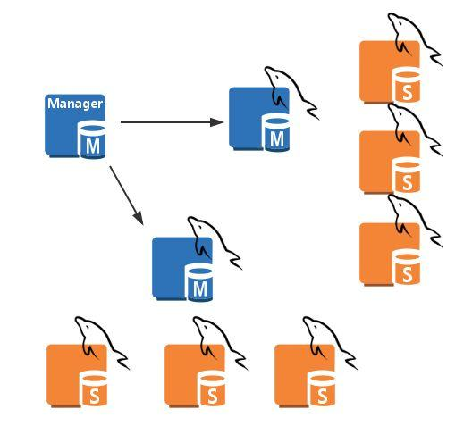

摘要：MySQL的高可用，Cluster，Galera Cluster的应用。
MySQL的高可用
Master HA或多主模型
MMM: Multi Master MySQL，基于主从复制实现
MHA： Master High Availability，对主节点进行监控，可实现自动故障转移至其它从节点；通过提升某一从节点为新的主节点，基于主从复制实现，还需要客户端配合实现，目前MHA主要支持一主多从的架构，要搭建MHA,要求一个复制集群中必须最少有三台数据库服务器，一主二从，即一台充当master，一台充当备用master，另外一台充当从库，出于机器成本的考虑，淘宝进行了改造，目前淘宝TMHA已经支持一主一从,MHA是由Prel语言编写。
官网下载MHA
Galera Cluster：wresp
通过wresp协议在全局实现复制；任何一节点都可读写，不需要主从复制，实现多主可读可写
MHA工作原理
- 从宕机崩溃的master保存二进制日志事件（
binlog events） - 识别含有最新更新的slave
- 应用差异的中继日志（
relay log）到其他的slave - 应用从master保存的二进制日志事件（
binlog events） - 提升一个slave为新的master
- 使其他的slave连接新的master进行复制
MHA软件由两部分组成，Manager工具包和Node工具包
Manager工具包主要包括以下几个工具：
masterha_check_ssh检查MHA的SSH配置状况masterha_check_repl检查MySQL复制状况masterha_manger启动MHAmasterha_check_status检测当前MHA运行状态masterha_master_monitor检测master是否宕机masterha_master_switch故障转移（自动或手动）masterha_conf_host添加或删除配置的server信息
Node工具包：这些工具通常由MHA Manager的脚本触发，无需人为操作）主要包括以下几个工具：
save_binary_logs保存和复制master的二进制日志apply_diff_relay_logs识别差异的中继日志事件并将其差异的事件应用于其他的slavefilter_mysqlbinlog去除不必要的ROLLBACK事件（MHA已不再使用此工具）purge_relay_logs清除中继日志（不会阻塞SQL线程）- 注意：为了尽可能的减少主库硬件损坏宕机造成的数据丢失，因此在配置MHA的同时建议配置成MySQL 5.5的半同步复制
实现MHA的搭建
原理图如下：至少需要4台主机。

准备工作
nptdate：保证时间同步,在/etc/ntp.conf,加上server 172.20.0.1 ibrust，重启服务systemctl restart ntpd安装包：
Manager上安装
mha4mysql-node-0.56-0.el6.noarch.rpm,mha4mysql-manager-0.56-0.el6.noarch.rpm，需要启用epel源下载安装依赖
其余节点：安装mha4mysql-node-0.56-0.el6.noarch.rpmselinux，iptables需要关闭.四台主机的IP配置模拟
1
2
3
4Manager:192.168.1.6
master:192.168.1.7
slave1:129.168.1.8
slave2: 192.168.1.17
Manager主机
实现四台主机的基于key验证,$ip为上面四台主机的ip配置。
1 | ssh-genkey |
安装mha4mysql-node-0.56-0.el6.noarch.rpm,mha4mysql-manager-0.56-0.el6.noarch.rpm，需要启用epel源下载安装依赖文件。
1 | ]# yum install -y mha4mysql-node-0.56-0.el6.noarch.rpm |
在Manager配置MHA的配置文件/etc/mha/app1.cnf，server1中的candidate_master=1,是可能变成主服务器的键值对选项。
1 | vim /etc/mha/app1.cnf |
开启集群，注意：在开启集群之前，要保证master和slave1，和slave2全部配置成主从复制架构。
1 | masterha_check_ssh --conf=/etc/mha/app1.cnf |
Master主机
1 | ]# yum install -y mha4mysql-node-0.56-0.el6.noarch.rpm |
slave1
1 | ]# yum install -y mha4mysql-node-0.56-0.el6.noarch.rpm |
slave2
1 | ]# yum install -y mha4mysql-node-0.56-0.el6.noarch.rpm |
Galera Cluster
Galera Cluster：集成了Galera插件的MySQL集群，是一种新型的，数据不共享的，高度冗余的高可用方案，目前Galera Cluster有两个版本，分别是Percona Xtradb Cluster及MariaDB Cluster，Galera本身是具有多主特性的，即采用multi-master的集群架构，是一个既稳健，又在数据一致性、完整性及高性能方面有出色表现的高可用解决方案。
官方参考文档参考如下:
http://galeracluster.com/documentation-webpages/galera-documentation.pdf
http://galeracluster.com/documentation-webpages/index.html
https://mariadb.com/kb/en/mariadb/getting-started-with-mariadb-galera-cluster/
Galera Cluster 的实现
注意：安装基于Galera的mariadb-5.5.60，不能安装mariadb-server包
三个节点的配置原理
三个节点组成了一个集群，与普通的主从架构不同，它们都可以作为主节点，三个节点是对等的，称为multi-master架构，当有客户端要写入或者读取数据时，连接哪个实例都是一样的，读到的数据是相同的，写入某一个节点之后，集群自己会将新数据同步到其它节点上面，这种架构不共享任何数据，是一种高冗余架构。

配置过程
下载安装MariaDB-Galera-server,国外yum源速度太慢，提供清华源下载。
1 | vim /etc/yum.repos.d/base.repo |
配置文件的修改
三台主机都需要修改，wsrep_provider，wsrep_cluster_address，binlog_format，主要改着三个键值对。
1 | ]# vim /etc/my.cnf.d/server.cnf |
启动相关
首次启动需要添加--wsrep-new-cluster，其他节点正常启动
1 | /etc/init.d/mysql start --wsrep-new-cluster |
测试及查询状态
数据会及时同步，如果三台服务器在相同数据表的相同行同时执行增删改，则只有一台节点会成功。
1 | SHOW STATUS LIKE '%wsrep%'\G |